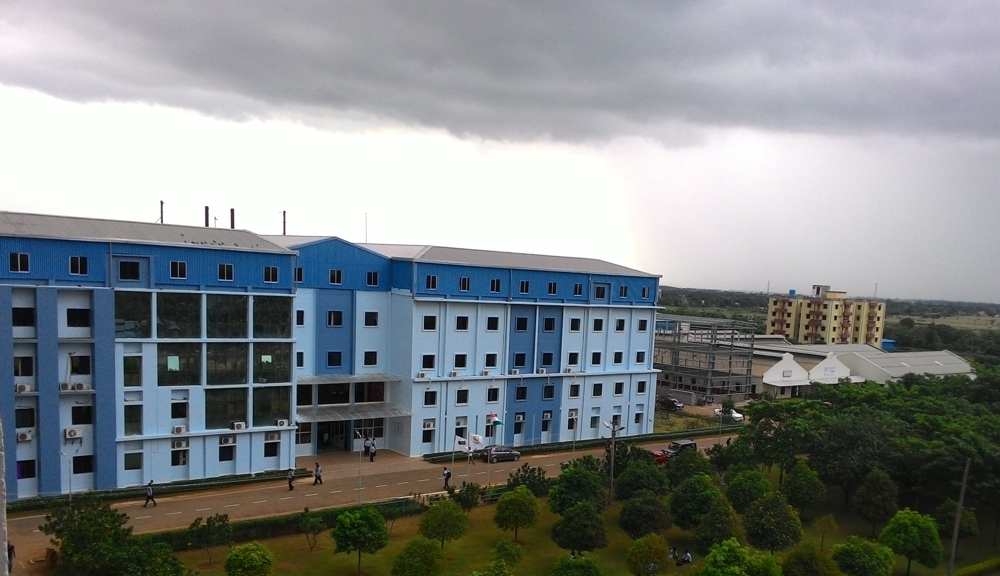

LIBRARY
 Welcome To CUTM Library
Welcome To CUTM Library

CUTM Library
The University library has successfully built up a comprehensive collection of over 50,000 books covering different branches of study. Besides, the library contributes and supports in building a top-ranked academic and research driven institution by supporting the students, faculty and research scholars.
The collections comprise print and electronic resources which include journals, books, CDs, audio cassettes and project reports in all fields of knowledge.
The library at the constituent campuses is also having enough seating capacity for reading purpose.
Journals & Magazines: The library subscribes to 60 print journals (both National and International) specific to the academic and research needs of the academic community of the university.
Electronic Resources: There are more than 5,000 electronic journals and also more than 50,000 books available in electronic form covering varied subjects through the online databases subscribed by the library.
©cutm